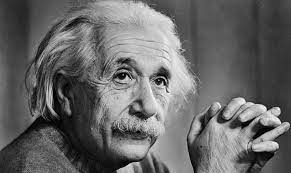

7. 별 하나의 성공과
우리 모두 성공을 위해 열심히 달리고 있습니다.
성공은 우리에게 행복을 가져다 줍니다.
하지만 성공을 위한 발걸음이 항상 편한 것 만은 아니죠.
때로는 가시덤불같은 장애물도 마주하고,
때로는 잘못된 길을 들어 먼 길을 돌아가기도 하고,
여러 시행착오들을 거쳐 심지어 실패하기도 합니다.
그래서 우리는 성공 그 자체에 집착하기보다 성공을 향해 걸어왔던
모든 발걸음 그 한 발짝 한 발짝을 소중하게 여기는 것이
더욱 바람직하다고 생각합니다.
이번 별은 목성입니다.
태양계에서 질량이 가장 큰 행성이기도 하죠.
이 별에선 우리는 성공에 대해서 생각해 봅시다.
“좋아하는 일을 선택해라. 그러면 성공은 자연스럽게 따라온다.”
[워렌 버핏]
“정말 성공하고 싶다면, 다른 사람들이 걷지 않은 길을 걸어라.”
[존 록펠러]
“실패는 성공의 어머니”
[토머스 에디슨]
“만약 성공의 비결이란 것이 있다고 하면
그것은 타인의 관점을 잘 포착하여 자기 자신의 입장에서
사물을 볼 줄 아는 재능, 바로 그것이다.”
[헨리 포드]
“실패에서부터 성공을 만들어내라.
과정과 실패는 성공으로 가는 가장 확실한 디딤돌이다.”
[데일 카네기]
"성공(success)이 노력(work)보다 먼저 나타나는 유일한 곳은 사전이다.”
[비달 사순]
"꼭 대학을 잘 가는게 성공이 아니다"
[차주호]
“또 여호와를 기뻐하라 그가 네 마음의 소원을 네게 이루어 주시리로다.”
[시편 37편 4절]

"산나는 장래의 일을 절대로 생각하지 않는다.
그것은 틀림없이 곧 오게 될 테니까."
[알베르트 아인슈타인]
"신을 믿기 위해서는 신이 있어야 한다.
성공을 바라면 우선 목적을 정해야 한다."
[카라마조프 가의 형제들]-표도르 도스토옙스키
"한 가지 뜻을 세우고, 그 길로 가라.
잘못도 있으리라. 실패도 있으리라.
그러나 다시 일어나서 앞으로 나아가라.
반드시 빛이 그대를 맞이할 것이다."
[이마누엘 칸트]
"붕정만리, 대기만성.
큰 성공을 위해선 큰 목표가, 오랜 시간이 걸린다."
[미상]
"하늘이 주신 것을 취하지 않으면 오히려 꾸지람을 듣는다.
때가 와서 행하지 않으면 오히려 화를 입는다"
[사마천(전145～86경 중국 역사가)]